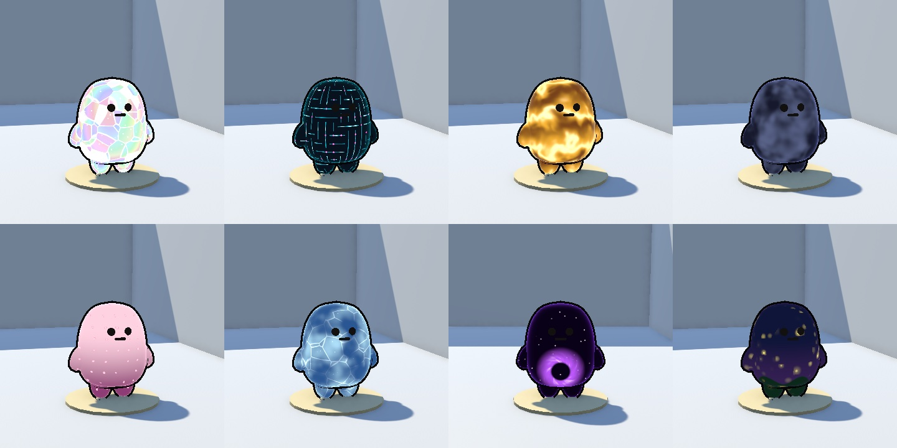
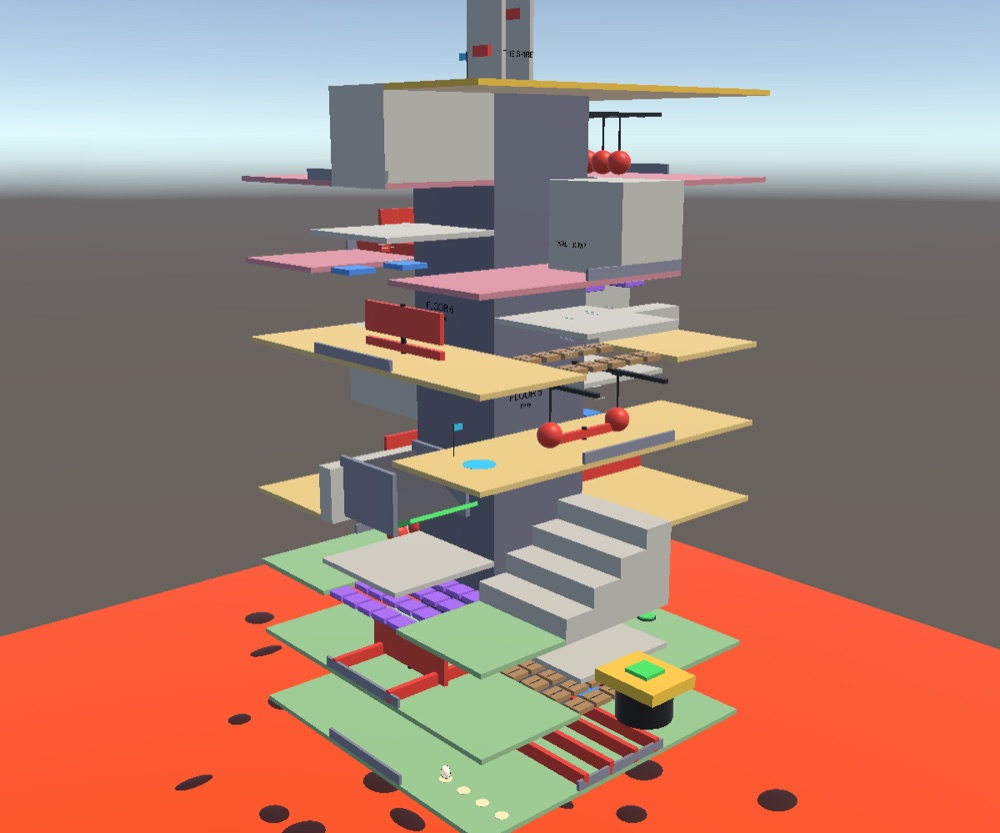
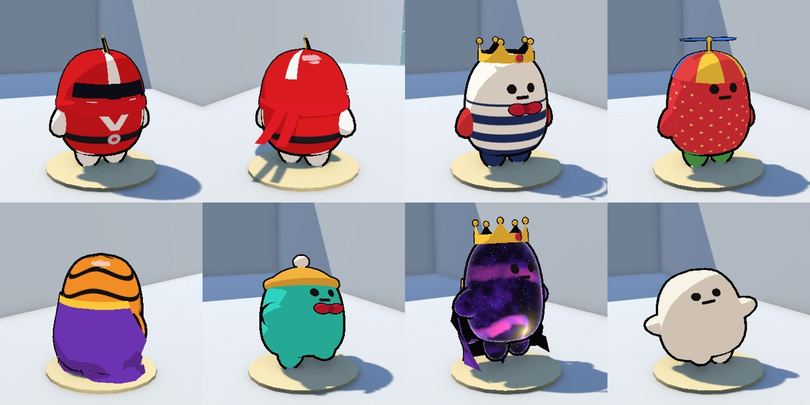

The newest of the lot, and the first 3D thing I have taken past a weekend. It started as a movement prototype rather than a game, which for a platformer is the right order: if running and jumping does not feel good on a flat grey box, no amount of level design rescues it.
The controller covers run and skid, a variable jump with apex hang and a separate fall multiplier, coyote time, a jump buffer, double jump, dive and dive-hop, wall slide and wall jump with a same-wall rule, ledge catch, ceiling corner correction, and squash, stretch and dust on top. Every tuning value lives in one ScriptableObject rather than buried in code.

The stages stay greyboxed while the movement is still moving, because dressing a level you are about to rebuild is wasted work. Tower is a vertical climb; Breakfast Rush is a kitchen run.
The piece I am happiest with is a simulation that predicts jump arcs and draws them in the editor, with tests asserting the real controller lands where the preview says it will. Tuning a platformer is mostly guessing at numbers and feeling the result; this way the numbers cannot quietly lie to me, and a change that breaks the arc fails a test instead of just feeling slightly off three weeks later.
Once that held up the rest went on quickly: the egg replaced the placeholder capsule — the same character family as glhf grow and million fish — with a toon shader, skins and accessories, dive chaining that builds speed across dives, two stages, a showroom, online races, hats, capes and a griddy emote. The best bug so far was Time.timeScale saved as 0.02 in the project settings, which had the whole game running at 2% speed.

Since then it has turned into something you can actually invite someone to. Online races run off a join code with a rematch at the end, so a race does not die with the lobby. The cosmetics went through three more rounds — hero helmets worn as hats, capes that sway, air poses, two legendaries in Stained Glass and Seraph Wings — and a comfort camera is the default now, since the follow camera was doing nobody any favours. Weapons and tools are held close to level whichever way you are facing, which meant reworking the blade kata around the new grip. The egg's design files and Blender scripts live in the repo rather than on my desktop.